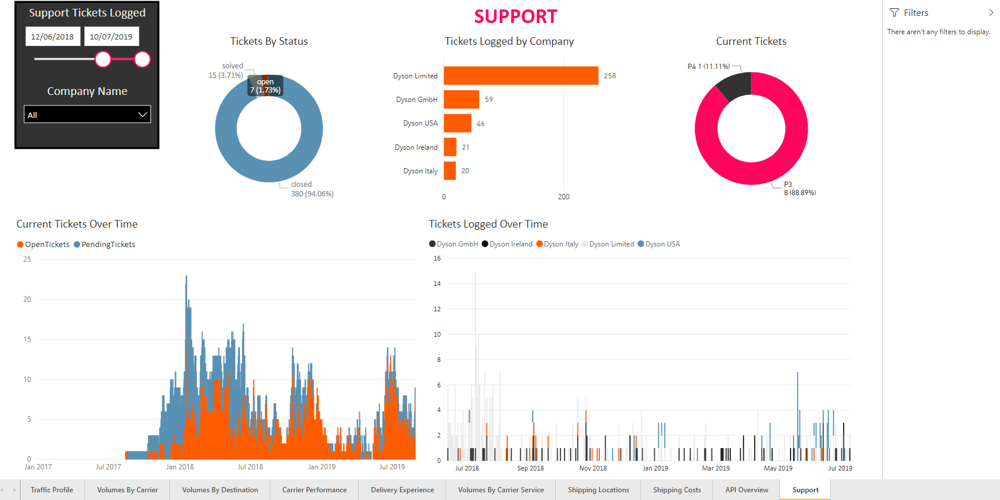
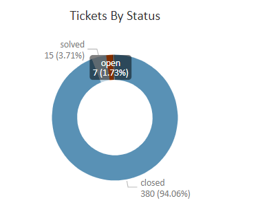
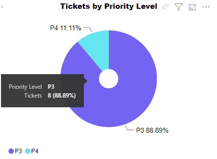

Support
The Support report enables you to get an overview of your organisation's current and past support tickets. It comprises a Tickets by Status pie chart, a Tickets Logged by Company bar chart, a Tickets by Priority Level pie chart, and a Tickets Logged Per Day By Company chart.
Report Filters
The Support report offers the following report-wide filters:
- Support Tickets Logged - enables you to select only those calls that were made within a given date range.
- Company Name - where applicable, enables you to select only those calls that were made by a particular company within your group. You can select multiple companies if required.
Tickets by Status
The Tickets by Status chat shows what proportion of your support tickets is in each of the support statuses.
Hover your mouse over a section of the pie chart to view the number of your tickets that are in each status.

Visualisation Filters
More Options
The Tickets by Status chart has the following options available from its More Options menu:
- Open Comments
- Export Data
- Show Data
- Spotlight
- Sort Descending
- Sort Ascending
- Sort by Status / Tickets
Tickets Logged by Company
The Tickets Logged by Company bar chart shows how many support tickets each of your companies has logged.

Visualisation Filters
More Options
The Tickets Logged by Company chart has the following options available from its More Options menu:
- Open Comments
- Export Data
- Show Data
- Spotlight
- Sort Descending
- Sort Ascending
- Sort by Company Name / Tickets
Tickets by Priority Level
The Tickets by Priority Level chart shows how many of your open tickets are in each of the various priority levels.

Hover your mouse over a section of the pie chart to view the number of open tickets in that priority level.
Visualisation Filters
More Options
The Tickets by Priority Level chart has the following options available from its More Options menu:
- Open Comments
- Export Data
- Show Data
- Spotlight
- Sort Descending
- Sort Ascending
- Sort by Priority Level / Tickets
Tickets Logged Per Day By Company
The Tickets Logged Per Day By Company chart shows the total number of tickets logged by each of your companies on any given day.

Visualisation Filters
- Created Date (Basic, Advanced, and Relative Date)
- Customer Name (Basic and Advanced)
- Tickets (Numerical)
More Options
The Tickets Logged Per Day By Company chart has the following options available from its More Options menu: